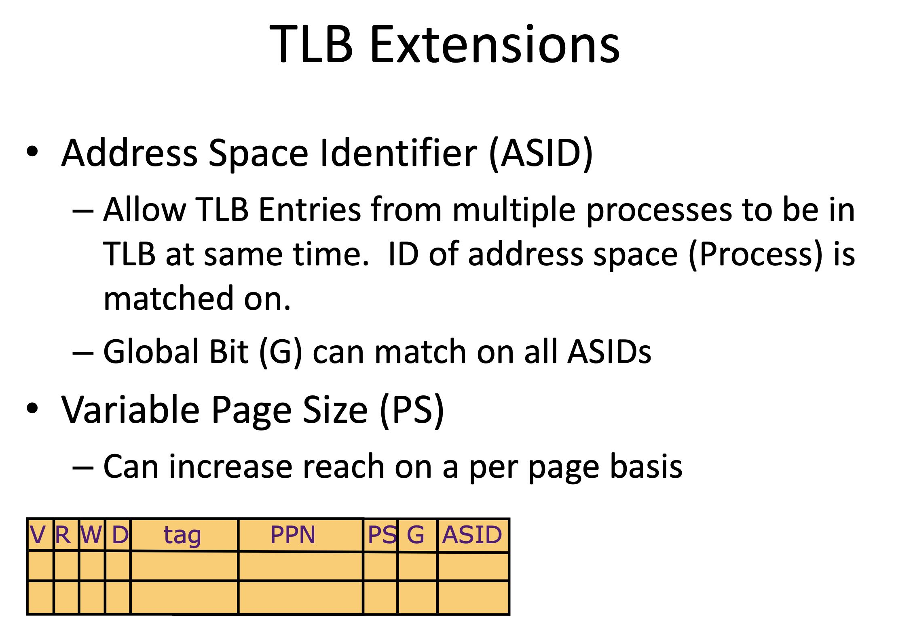

Computer Architecture Readings - Princeton - Branch Predication/Address Translation/GPU
关于branch predication, 这篇文章讲的不错 https://danluu.com/branch-prediction/ 对软件工程师比较友好的那种文章
Address Translation主要就是要考虑如何设计PT(Page Table), 在上面还需要做memory protection. TLB(Translation Lookaside Buffers)，如何处理以及如何处理tlb cache miss的情况（软件还是硬件？）
Handling a TLB Miss
- Software (MIPS, Alpha)
- TLB miss causes an exception and the operating system walks the page tables and reloads TLB. A privileged “untranslated” addressing mode used for walk
Hardware (SPARC v8, x86, PowerPC)
- A memory management unit (MMU) walks the page tables and reloads the TLB
- If a missing (data or PT) page is encountered during the TLB reloading, MMU gives up and signals a Page-Fault exception for the original instruction

GPU结构看上去有点类似一个多线程的SIMD处理器（单核视角），然后外层还有多核结构。下图中每个lane是一个SIMD处理单元（这个和x86 simd概念相同），在一个core上有多个lane可以同时操作。